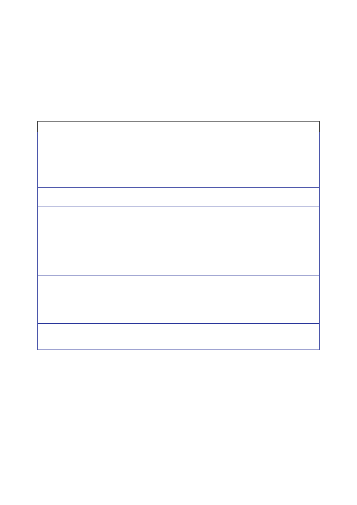

12.1 |
Security Sector Reform
428.
On 22 April,
CPA Order No.73 put the ICDC under the control of the
IMOD.365
The ICDC
was renamed the Iraqi National Guard (ING) on 20 June
2004.
429.
In response to
the violence in Fallujah, Najaf and other locations in April, a
number
of
different “elite” forces were created in an attempt to raise the
capability of some of the
ISF above
that of the insurgents. Table 2 provides a summary of
those.366
Name
Emergency
Response
Units
Department
MOI
Date
created
CPA
era
Detail
A small,
elite, national unit trained for high‑risk
search,
arrest, hostage rescue, crisis response,
and
explosive ordnance disposal (EOD)
Iraqi
Intervention
Force
Iraqi
Special
Operations
Force:
IMOD
IMOD
–
Commando
Battalion
June
2004
July
2004
By July 2004
only 40 officers were operational;
the target
was 750 officers by November 2005.
6,000
strong, announced by Prime Minister Allawi
before he
took office.368
An elite
force which operated outside the Iraqi
Armed Forces
chain of command. Trained by US
Special
Forces.
–
Iraqi
Counter‑Terrorism
Force
Civil
Intervention
Force
–
Special
Police
Commandos
MOI (all MOI
forces
here were
collectively
known as
Special
Police
Forces)
September
2004
Civil
Intervention
Force
–
Mechanised
Police
MOI
November
2004
An elite
paramilitary force for counter‑insurgency
support
created by Mr Bayan Jabr, Minister of
the Interior.
The
Commandos received no traditional police
Conducted
vehicle‑mounted operations to secure
high‑value
routes, such as Route Irish (the route
from the
airport to the Green Zone in Baghdad).
365
Coalition
Provisional Authority Order Number 28 – Establishment of the Iraqi
Civil Defense Corps,
3 September
2003; Wright Dr DP & Reese Col TR. On Point II: Transition
to the New Campaign.
The United
States Army in Operation IRAQI FREEDOM May 2003 – January 2005,
Combined
Studies Institute
Press, June 2008.
366
Bowen SW
Jr. Hard
Lessons: The Iraq Reconstruction Experience. U.S.
Government Printing
Office, 2009.
367
Report to
Congress, 13 October 2005, Measuring
Stability and Security in Iraq.
368
Letter
Cabinet Office [junior official] to Sheinwald, 29 June 2004, ‘Iraq:
Strategy Group’.
369
Report to
Congress, July 2005, Measuring
Stability and Security in Iraq.
151